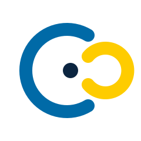
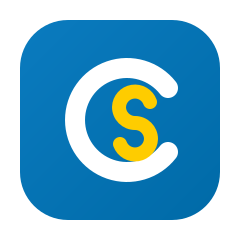

A · Monogram SC
ตัว C (Chamber) สีน้ำเงินสวีเดน คล้องตัว S (Swe) สีเหลือง — เรียบ จำง่าย ใช้ดีทุกขนาด

B · Crest / Roundel
ตราวงกลมทางการ สื่อความเป็นสถาบันของหอการค้า เหมาะกับเอกสาร/ตรายาง/ป้าย

C · Bridge / Connection
สองส่วนโค้งหันเข้าหากัน = สะพานเชื่อมไทย-สวีเดน เกิดเป็นรูป C เปิด ทันสมัย

D · App Tile
ไอคอนแอปโค้งมน ใช้เป็น favicon / portal launcher ของ Chamber-OS ได้ทันที
